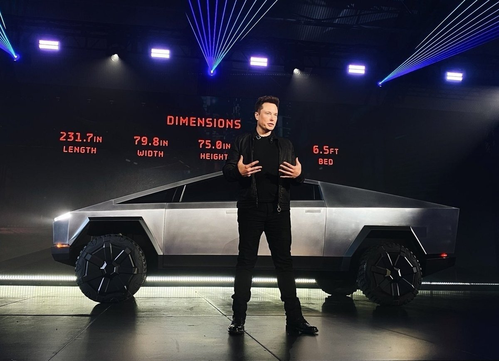

В 2012 и 2013 годах Маск обсуждал создание пикапа, схожего с Ford F-250. В раннем 2014 Маск предсказывал 4-5 лет перед созданием такой машины.
В 2016 Маск говорил о создании пикапа с совершенно новыми свойствами. Возможно создание рамы и подвески для создания пикапа или небольшого фургона. В позднем 2017 размер был определён как, по меньшей мере Ford F-150, причем со свойством «изменяющий игру». В процессе выкаток Tesla Semi и Tesla Roadster в ноябре 2017-го показывали картинку пикапа, способного перевозить пикап. Идеи этого пикапа прорабатывались 5 лет, по меньшей мере.
В позднем 2018 Tesla работала над двумя гранями своего пикапа. Первая грань — это использование основы Mercedes-Benz Sprinter с добавленными Tesla электрической трансмиссией, батареей и электроникой. Вторая грань — это производство собственного пикапа Tesla, что, требует больше времени. Прототип этого фургона был отвергнут в течение подготовки к шоу в 2019-м.
В марте 2019, сразу после запуска Tesla Model Y, Илон Маск показывал изображение пикапа и говорил, что он будет в стиле киберпанк и не всем понравится из-за его футуристичных форм и стиля персонального защищенного транспорта.
В течение презентации, которая состоялась 21 ноября 2019 года, Маск демонстрировал материалы, из которых сделан Tesla Cybertruck[4]. А это нержавеющая сталь и особо прочное стекло. Особо прочное стекло не разбилось в тесте прямо на презентации, но когда Франц фон Хольцхаузен металлическим шаром попытался разбить стекла в машине, они разбились. Маск пошутил, что «ему есть над чем поработать». И что «мы это сотрем на видео».
Перед концом презентации Маск показал Tesla ATV — полностью электрический квадроцикл. Его закатили в Tesla Cybertruck по рампе и, при том, он мог заряжаться от него. (от розетки 120 вольт);